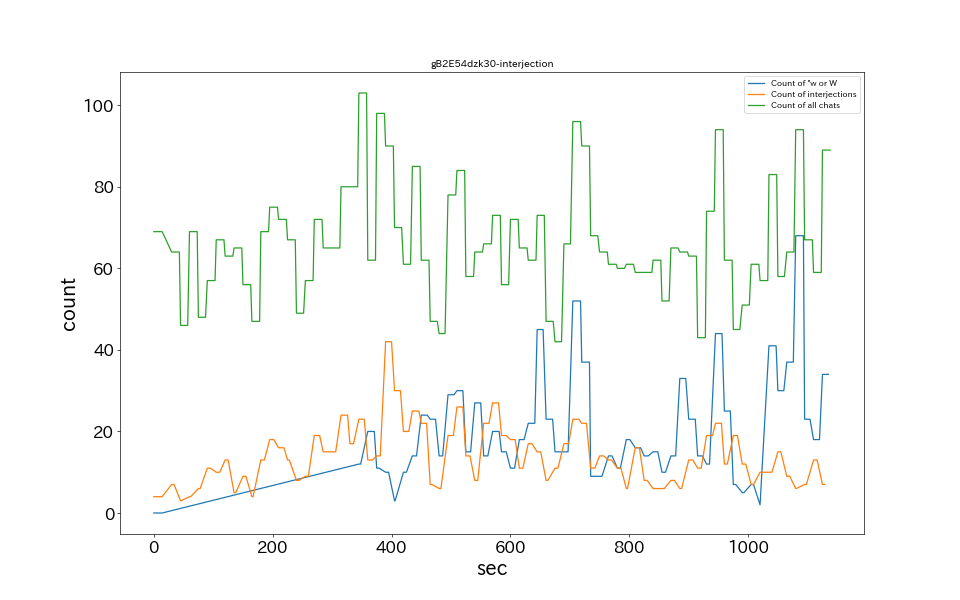
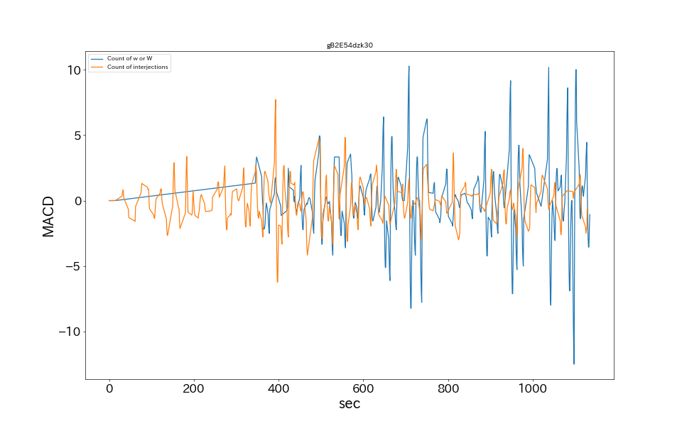

エイプリルフールだけど普通に運動するゲームしよう！【月ノ美兎/にじさんじ】
15秒あたりのコメント数

MACDによるバースト検知

草、wのチャット数ランキング
No.
時間
草、wチャット数
1
1050
68
2
675
52
3
615
45
4
915
44
5
1005
41
感動詞のチャット数ランキング
No.
時間
感動詞チャット数
1
360
42
2
375
30
3
540
27
4
480
26
5
405
25
MACDによるバースト検知
No.
時間
感動詞チャット数
1
255
3.33
2
240
3.0
3
900
2.69
4
690
2.47
5
225
2.33